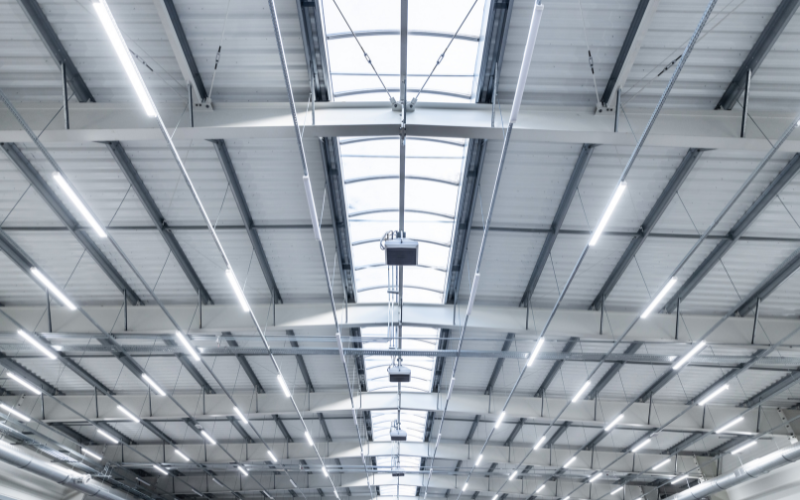
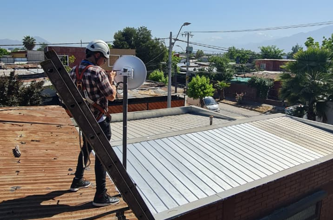
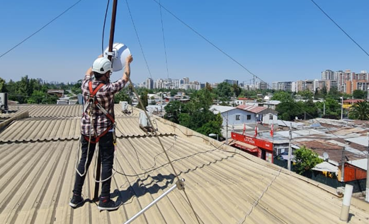
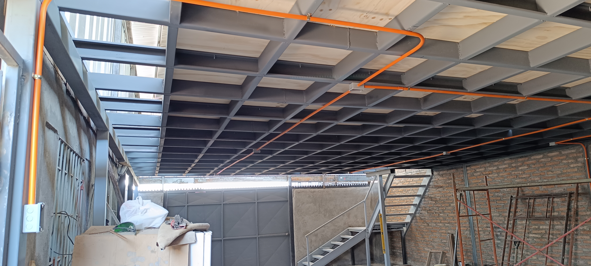
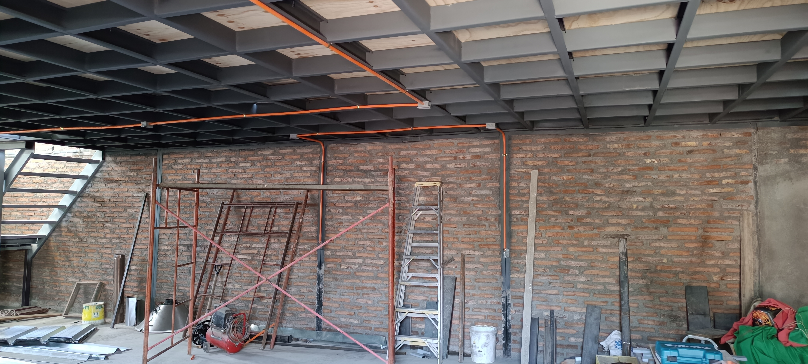

Infraestructura y Redes
Gestión de TI, topologías, racks y conectividad.
Ver proyectos
Manufactura 3D
Diseño, calibración y producción de figuras en PLA.
Ver proyectos
Denial Tec
Soluciones de iluminación estética y eficiente.
Ver proyectosProyectos de Redes
Proyecto 1: Ordenamiento de Rack Principal
Descripción: Saneamiento completo del cableado estructurado, peinado de cables de red y reorganización de switches. Este proyecto se enfocó en mejorar la ventilación de los equipos activos y facilitar el diagnóstico rápido de fallas en la capa física.


Proyecto 2: Enlace de Respaldo y Failover en Centro de Salud
Descripción: Despliegue de un enlace inalámbrico punto a punto de respaldo entre un edificio municipal y el centro de salud local utilizando antenas Ubiquiti PowerBeam 5AC Gen2. Adicionalmente, se configuró un balanceador de carga TP-LINK TL-R470T+ para gestionar un sistema de enrutamiento failover, asegurando alta disponibilidad y continuidad operativa ante caídas del servicio principal.



Proyectos 3D (Ender-3 V3 SE)
Proyecto 1: Figuras Temáticas (Anime y Cultura Pop)
Descripción: Laminado de alta precisión y producción de modelos detallados basados en franquicias como Dragon Ball, One Piece y Saint Seiya utilizando PLA de alta calidad.


Proyecto 2: Piezas Utilitarias y Maceteros
Descripción: Diseño y fabricación de maceteros autorregantes e insertos organizativos para uso doméstico y mudanzas.

Proyectos Denial Tec
Proyecto 1: Iluminación Residencial
Descripción: Instalación de luminarias, Puntos Eléctricos y Tableros Domiciliarios.

